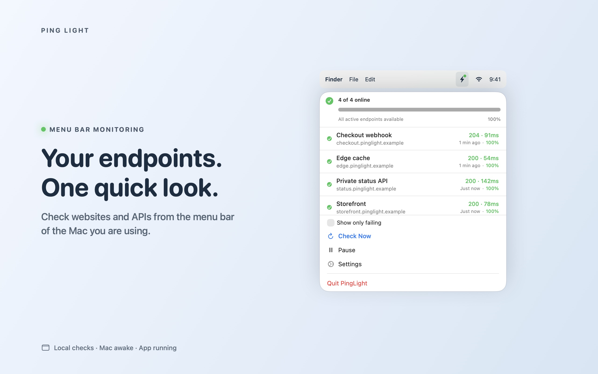

Keep a development API in view
Check endpoints reachable from your own Mac and recognize unexpected response codes without opening a dashboard.
For editors and testers
Ping Light checks websites and HTTP APIs from the Mac menu bar, with expected-status rules, local history and failure/recovery notifications.
Check endpoints reachable from your own Mac and recognize unexpected response codes without opening a dashboard.
Configure the HTTP method and response code appropriate to each endpoint.
Inspect local history and configure macOS alerts, with notification permission and endpoint settings taken into account.
Native UI captures use illustrative .example endpoints. They demonstrate interface states, not an uptime measurement or a benchmark. The marketing frame illustrates the macOS menu bar.

Start with a URL you control, verify the expected status, then observe a controlled failure and recovery. Check notification permission, network reachability and sleep behavior separately. See the setup guide and privacy policy.
For testing access, corrections or press questions: admin@raindigit.ie. Do not send bearer tokens, credentials or sensitive endpoint URLs.